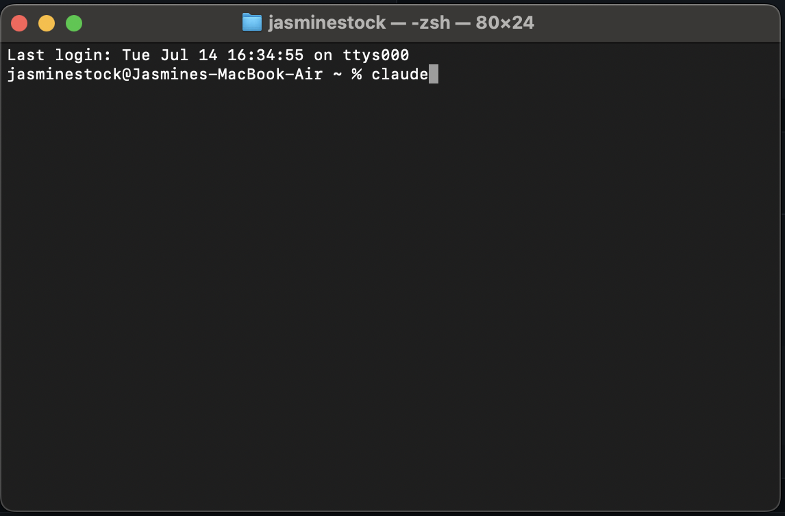
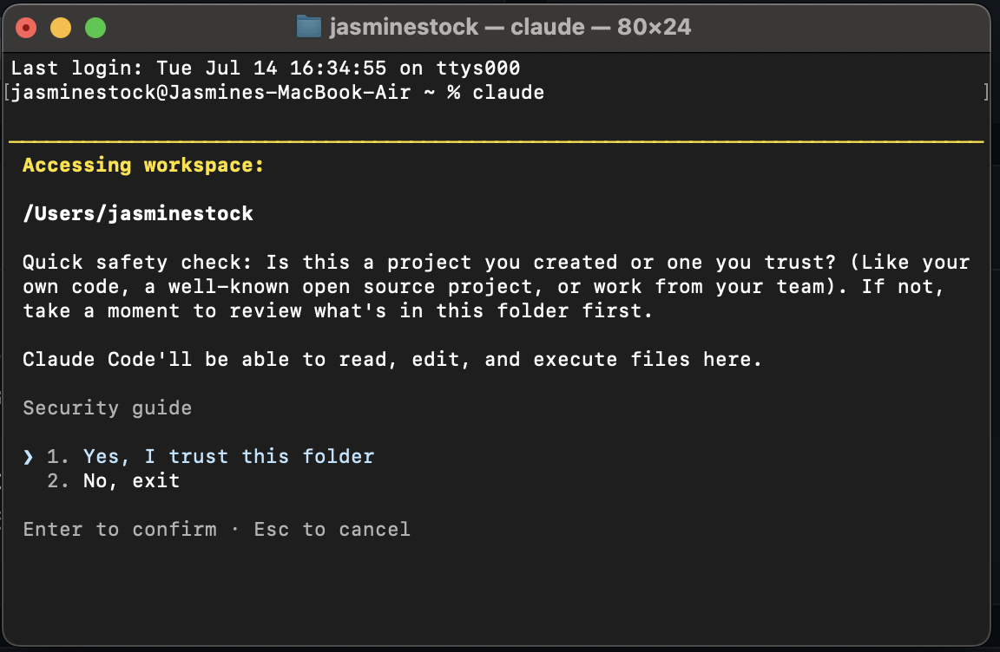
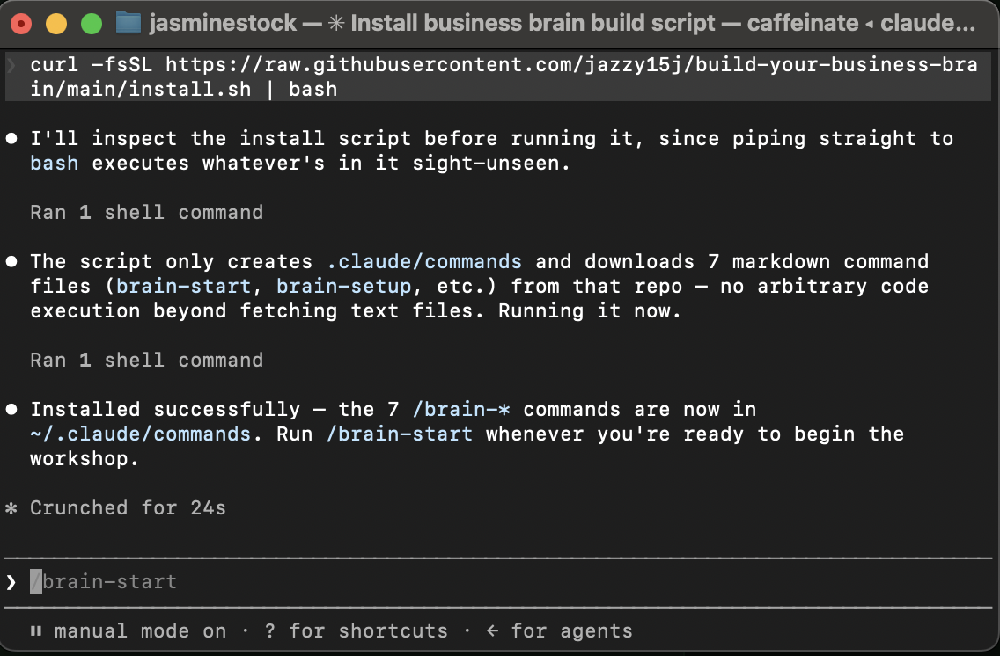
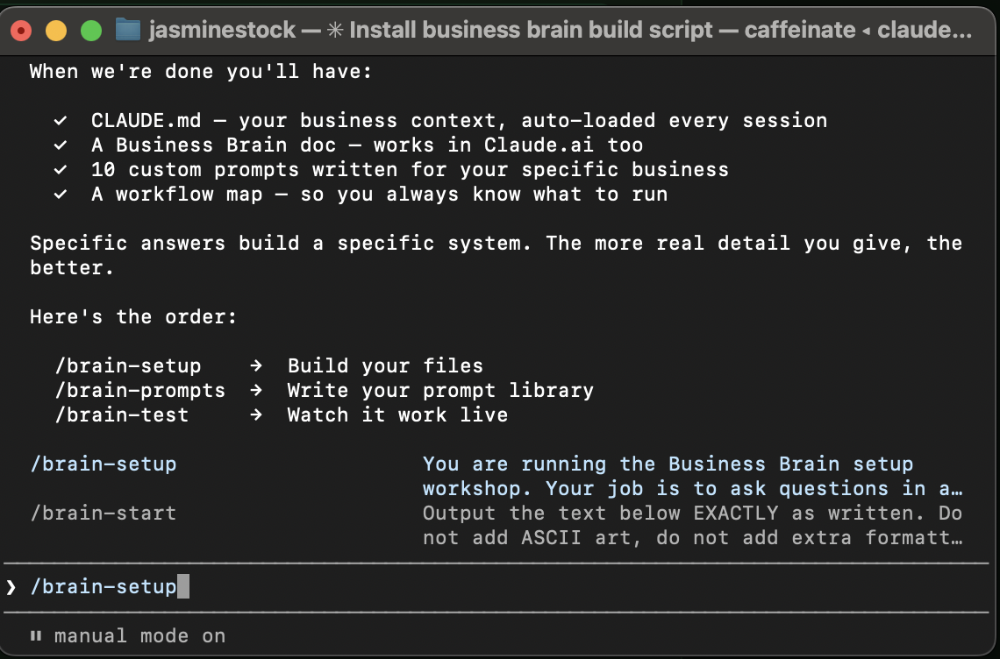
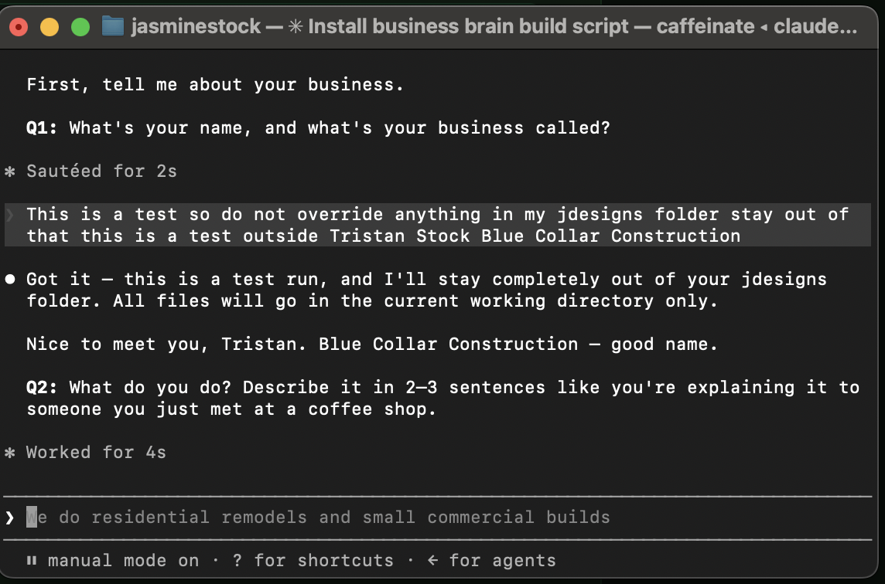

Open Claude Code, paste one install command, then type /system-start — the workshop walks you through everything from there. About 30 minutes start to finish. Exact steps below, with screenshots at every stage.
New to Claude Code? Start Here
Claude Code is the free tool from Anthropic that runs this workshop. Already have it installed and know it works? Skip to "Install the Workshop" below.
1
Get a free Claude account — sign up here (includes a free week of Claude Pro).
2
Open Terminal (Mac) or PowerShell (Windows).
3
Paste the command for your system below and press Enter. It can sit with no text on screen for 10–30 seconds before anything prints — that's normal, it's downloading in the background. Don't retype or close the window, just wait.
Mac / Linux
Terminal
curl -fsSL https://claude.ai/install.sh | bash
Windows (PowerShell)
PowerShell
irm https://claude.ai/install.ps1 | iex
Claude Code itself is free to install. Using it requires a Claude Pro, Max, Team, Enterprise, or Console account — the sign-up link above gets you a free week of Pro to try it.
Nothing printing after a minute, or an error appears? You're likely on a network that blocks the download — try npm install -g @anthropic-ai/claude-code instead (requires Node.js), or see code.claude.com/docs.
4
Check it worked — this is what you'll see:

"Claude Code successfully installed!" with a version number. That's your confirmation — no separate check needed.
5
Type claude and press Enter — this launches Claude Code.
6
The first time in a folder, it asks to trust it. If you haven't moved anywhere else, this will be your default home folder (something like /Users/yourname) — that's exactly right, don't overthink it. Choose "Yes, I trust this folder."

This is the trust prompt — select "Yes, I trust this folder" and press Enter.
Install the Workshop
Still inside Claude Code from the last step (same window, same folder) — paste this command right at the Claude Code prompt and press Enter.
Same idea in PowerShell — paste it at the Claude Code prompt and approve when asked.

Claude Code checks the script before running it, then confirms once the 7 /system-* commands are installed. That's your cue to type /system-start.
Start the Workshop
1
Type /system-start and press Enter — the workshop begins and shows you what you're about to build.

/system-start shows you what you're building and the order to run things: /system-setup → /system-prompts → /system-test.
2
Type /system-setup and press Enter, then just answer each question in plain language — no templates, nothing to fill in yourself.

/system-setup asks one question at a time and reacts to what you type — this is the real thing, not a mockup.
3
Keep following the prompts through /system-prompts and /system-test. About 30 minutes total, start to finish. Your Business System is ready when you're done.
Your 7 Workshop Commands
/system-startBegin the workshop — start here
/system-setupBuild your core business files step by step
/system-promptsBuild your personal prompt library
/system-testTest that Claude knows your business correctly
/system-doneWrap up and get your next steps
/system-updateUpdate your Business System as your business changes
/system-helpGet unstuck at any point in the workshop
What You'll Have When You're Done
Five files, built once, working every session after. This is exactly what lands in your folder.
my-brand-kit.mdColors, fonts, logo status — quick reference for any design work
my-prompts.md10 ready-to-use prompts, pre-filled with your real voice and rules
workflow-map.md"When this happens → use this prompt," so you always know what to run
A peek inside CLAUDE.md — the file Claude reads automatically, every time you open this folder:
CLAUDE.md
# [Your Business] — Business System
## Who I Am
[Your name], [your role] at [your business]...
## My Offers
[Your services — what you sell, what makes the most money]...
## My Voice
[How you sound — phrases you use, phrases you never say]
## My Rules for Claude
- Label every draft: [DRAFT — REVIEW BEFORE SENDING]
- Never promise outcomes or results — flag anything uncertain instead
- Write in my voice, not generic AI language
## My Focus Right Now
[Your current goal — update this as your business changes]
This is a self-guided digital workshop. It installs 7 slash commands that run inside Claude Code (free from Anthropic). You'll need a Claude account to use them — Claude Code is free to download here (includes a free week of Claude Pro). All sales are final.